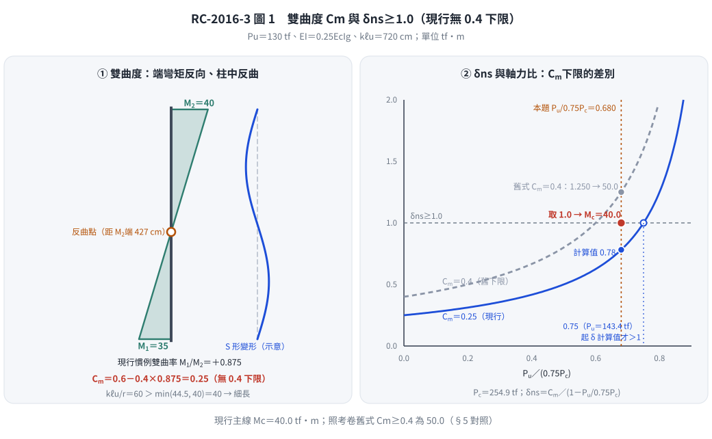

📄 題目正本：考卷原文・附圖・判讀清單（已確認）
RC-2016-3 題目正本
本檔只記錄考卷上寫了什麼、圖上畫了什麼，不含任何解法。解析見同資料夾
RC-2016-3.md。
判讀清單已經確認（凍結）；本檔原則上不再修改（改動須回考卷原圖並記 log）。
| 項目 | 內容 |
|---|---|
| 考卷 | raw/exams/RC-2016_鋼筋混凝土設計與預力.pdf 第 2 頁（背面），第三題 |
| 考年 | 民國 105 年（2016） |
| 配分 | 20 分 |
| 附圖 | 無（本題無附圖） |
| 判讀狀態 | 已確認（2026-11-15 使用者授權依 Claude 建議確認；轉錄 2026-11-15；PyMuPDF 110 dpi 全頁目視，附圖 400–450 dpi 局部放大；文字以 PDF 文字層核對（公式以影像為準）；盲讀後才比對既有解析） |
1. 考卷原文（逐字）
三、有一無側移柱，淨高 8 m，斷面為 40 cm × 40 cm 正方形，$f_y$＝4200 kgf/cm²，$f'_c$＝280 kgf/cm²。極限載重下之分析軸力 $P_u$＝130 tf，一端分析彎矩 $M_u$ 為 35 tf-m，另一端分析彎矩 $M_u$ 為 40 tf-m，柱受力成雙曲度型式。假設柱有效長度係數取 $K$＝0.9，EI 值取 $0.25E_cI_g$，試求設計彎矩與軸力。（20 分）
2. 考卷給的公式、附表與參數
- 題文數值：無側移；淨高 8 m；40×40 cm；$f_y$＝4200、$f'_c$＝280 kgf/cm²；$P_u$＝130 tf；兩端 $M_u$＝35、40 tf-m；雙曲度；$K$＝0.9；$EI$＝0.25$E_cI_g$。
- 卷首「可能使用公式」（照錄）：$E_c=15000\sqrt{f'_c}$ kgf/cm²；$E_s=2.04\times10^6$ kgf/cm²；$f_r=2\sqrt{f'_c}$ kgf/cm²；$\dfrac{kl_u}{r}\le34-12\dfrac{M_1}{M_2}$；$\delta_{ns}=\dfrac{C_m}{1-\dfrac{P_u}{0.75P_c}}\ge1.0$；$C_m=0.6+0.4\dfrac{M_1}{M_2}\ge0.4$；$P_c=\dfrac{\pi^2EI}{(kl_u)^2}$。
- 卷首鋼筋表：D10（#3）0.71、D22（#7）3.87、D29（#9）6.47 cm²。
- 作答參考規範（卷首）：中國土木水利工程學會「混凝土工程設計規範（土木 401-100）」。
- 沒有給：柱配筋、$M_1/M_2$ 的正負號慣例（印出的式子屬舊版慣例：單曲率為正）、$\beta_d$（已直接給 $EI$）、迴轉半徑取法。
- 卷首注意事項：㈠可以使用電子計算器。㈡不必抄題，作答時請將試題題號及答案依照順序寫在試卷上，於本試題上作答者，不予計分。
3. 附圖
無（本題無附圖）。
4. 判讀清單
「把握」標不確定者優先列；解讀類項目（題目用字的意思）另標「解讀」。標「依 Claude 建議確認」者，為使用者 2026-11-15 授權「要我確認的請依你建議」後定案。
| # | 項目 | 判讀 | 圖上／題文依據 | 把握 |
|---|---|---|---|---|
| 1 | 雙曲度與 $M_1/M_2$ 符號 | $M_1$＝35（較小端）、$M_2$＝40（較大端），雙曲度；依考卷印出的舊版慣例（單曲率為正）$M_1/M_2$＝－35/40；現行規範慣例相反（雙曲率為正、式子改號），兩者結果相同 | 題文「雙曲度型式」；卷首式 $34-12M_1/M_2$、$C_m=0.6+0.4M_1/M_2$ | 確定（解讀） |
| 2 | $EI$ | 直接採題給 $0.25E_cI_g$（題目指定的參數） | 題文「EI 值取 0.25$E_cI_g$」 | 確定 |
| 3 | $l_u$、$K$ | $l_u$＝800 cm（淨高）；$K$＝0.9 | 題文 | 確定 |
| 4 | 斷面 | 40×40 cm 正方形 | 題文 | 確定 |
| 5 | 載重 | $P_u$、$M_u$ 皆為極限（因數化）分析值 | 題文「極限載重下之分析軸力」 | 確定 |
| 6 | 所求 | 設計彎矩（放大後 $M_c$）與設計軸力 | 題文 | 確定 |
| 7 | 考卷沒有給 | 柱配筋、$\beta_d$ | 全題 | 確定 |
轉錄：2026-11-15（RC-U3-3 批 2＋U1-3＋U2-3 題目正本推廣）
確認：2026-11-15 使用者授權依 Claude 建議確認（RC-U3-3 批 2＋U1-3＋U2-3 題目正本推廣，關卡一）
考題編號：RC-2016-3
主分類： RC-U1-3 細長柱
副分類： RC-U1-2 RC 柱強度分析與設計
設計法： USD強度設計法
標籤： 細長柱 無側移構架 放大彎矩法 Cm係數 雙曲度 臨界載重Pc δns計算
1. 題目（考卷原文見題目正本）
考卷原文、公式／附表、附圖與判讀清單（已確認）見
RC-2016-3-problem.md。本節只列解題時最容易讀錯的地方與本解使用的記號；題意以題目正本為準。
常見誤讀
| 項目 | 正確判讀 | 常見誤讀 |
|---|---|---|
| $M_1/M_2$ 符號 | 雙曲度。現行規範（ACI 318-19 世代）慣例：雙曲率為正 → $M_1/M_2$＝＋35/40＝＋0.875，式子為 $34+12M_1/M_2\le40$、$C_m=0.6-0.4M_1/M_2$；考卷印出的是舊版慣例（單曲率為正、式子反號），兩套代入的 $C_m$ 計算值相同（0.25） | 雙曲度代入式子時符號與慣例混用 |
| $C_m$ 下限 | 現行規範 沒有 $C_m\ge0.4$ 下限（ACI 318-08 起取消，318-05 為最後一版；318-14 起另改為單曲率為負的符號慣例），$\delta_{ns}$ 取計算值與 1.0 之大者 | 照考卷卷首舊式取 $C_m=0.4$（→ 50.0 tf-m，舊答案） |
| 細長比限值 | $34+12M_1/M_2$＝44.5，但上限 40 | 直接用 44.5（本題結論不變） |
| $EI$ | 題給 0.25$E_cI_g$，直接採用 | 另依 $\beta_d$ 計算 |
| $l_u$、$K$ | 800 cm、0.9 | — |
| 所求 | 設計軸力與放大後設計彎矩 | 只判斷是否細長柱 |
本解記號： 40×40 cm；$l_u$＝800 cm；$K$＝0.9；$EI$＝0.25$E_cI_g$；$P_u$＝130 tf；$M_1$＝35、$M_2$＝40 tf-m（雙曲度，現行慣例 $M_1/M_2$＝＋0.875）。規範：建築物混凝土結構設計規範（2023 年版，ACI 318-19 世代）第 6.6.4 節。
2. 考題核心精神與出題者意圖（Core Concepts & Examiner's Intent）
核心觀念：
- 細長柱判斷：以 $kl_u/r$ 與臨界值 $34+12(M_1/M_2)\le40$ 比較（現行慣例，雙曲率為正），決定是否需要放大彎矩
- 雙曲度的有利效應：雙曲度時 $C_m=0.6-0.4M_1/M_2$ 變小，放大係數相對小；現行規範沒有 $C_m$ 下限，改由 $\delta_{ns}\ge1.0$ 把關
- 放大係數 $\delta_{ns}$：無側移構架放大彎矩法，最終設計彎矩 $M_c = \delta_{ns} M_2$，$M_2\ge M_{2,\min}$
- EI 計算：題目直接給定 $EI = 0.25E_cI_g$，考驗 $E_c$ 計算
出題者意圖：
- 測驗細長柱判斷流程是否完整（含臨界值計算，不可直接跳到放大係數）
- 確認雙曲度下 $M_1/M_2$ 符號的正確取法與 $C_m$ 的計算
- 驗證 $P_c$ 計算的精確性
- （考卷時代）原意是考 $C_m\ge0.4$ 下限；現行規範已取消，答案改由 $\delta_{ns}\ge1.0$ 控制（見 §5）
3. 解題戰略地圖與陷阱分析（Strategic Roadmap & Trap Analysis）
作戰計畫
Step 1：計算迴轉半徑 r，求細長比 klu/r
Step 2：計算臨界細長比（雙曲度，上限 40），判斷是否為細長柱
Step 3：計算 Ec 與 Ig，求 EI
Step 4：計算歐拉臨界載重 Pc
Step 5：計算 Cm（現行式，無 0.4 下限）
Step 6：計算放大係數 δns（≥ 1.0）
Step 7：檢核 M2,min，計算設計彎矩 Mc = δns × M2
關鍵陷阱
| # | 陷阱 | 說明 | 應對策略 |
|---|---|---|---|
| ① | $M_1/M_2$ 符號慣例 | 現行規範：單曲率為負、雙曲率為正，式子為 $34+12M_1/M_2$、$0.6-0.4M_1/M_2$；舊版慣例與式子同時反號 | 先看規範版本的式子，再決定符號；兩套結果相同 |
| ② | $C_m$ 下限 0.4 已取消 | 現行規範 $C_m=0.25$ 直接用，$\delta_{ns}=0.78\to$ 取 1.0 | 不要再取 $C_m=0.4$；最後檢查 $\delta_{ns}\ge1.0$ |
| ③ | 細長比臨界值上限 40 | $34+12\times0.875=44.5>40$ → 取 40 | 算完記得與 40 比較 |
| ④ | $r$ 的計算：用 $0.3h$ 近似 | 方形斷面 $r = h/\sqrt{12} \approx 0.289h$，規範容許取 $r = 0.3h$ | 考場可直接用 $r = 0.3h$ |
| ⑤ | $M_{2,\min}$ | $P_u(1.5+0.03h)$＝3.51 tf-m ≪ 40 | 不控制，但流程上要寫 |
3.5 變數層次分析（Variable Hierarchy Analysis）
複習提示：第一次解題後，在每個卡住的知識點旁標記
⚠；第二次複習時只看有⚠的項目。
最終目標
計算放大係數 δns → 求設計彎矩 Mc = δns × M2（設計軸力 Pu 不變）
本題關鍵公式（依計算順序）
$\boxed{\cdot}$ = 需由前步驟推導，非題目直接給定的變數
$$\text{Step 1: } r = 0.3h \quad \Rightarrow \quad \frac{kl_u}{r} = \frac{0.9 \times 800}{\boxed{r}}$$
$$\text{Step 2: } 34 + 12\!\left(\frac{M_1}{M_2}\right) \le 40 \quad \left(\frac{M_1}{M_2} > 0\ \text{雙曲度，現行慣例}\right)$$
$$\text{Step 3: } E_c = 15000\sqrt{f'_c},\quad I_g = \frac{b h^3}{12},\quad EI = 0.25\,E_c I_g$$
$$\text{Step 4: } P_c = \frac{\pi^2 \boxed{EI}}{(kl_u)^2}$$
$$\text{Step 5: } C_m = 0.6 - 0.4\!\left(\frac{M_1}{M_2}\right)\quad\text{（現行規範無下限）}$$
$$\text{Step 6: } \delta_{ns} = \frac{\boxed{C_m}}{1 - P_u/(0.75\boxed{P_c})} \geq 1.0$$
$$\text{Step 7: } M_c = \boxed{\delta_{ns}} \times \max(M_2,\ M_{2,\min})$$
L1：題目直接給定
| 符號 | 數值 | 說明 |
|---|---|---|
| $b = h$ | 40 cm | 方形斷面邊長 |
| $l_u$ | 800 cm（8 m） | 柱淨高 |
| $K$ | 0.9 | 有效長度係數 |
| $P_u$ | 130 tf | 極限軸力（因數化） |
| $M_2$ | 40 tf-m | 較大端彎矩（控制端） |
| $M_1$ | 35 tf-m | 較小端彎矩（雙曲度，現行慣例取正） |
| $f'_c$ | 280 kgf/cm² | 混凝土強度 |
| $f_y$ | 4200 kgf/cm² | 鋼筋強度 |
| EI | $0.25\,E_c I_g$ | 有效彎曲剛度（題目給定） |
L2：需知識點推導
Step 1：細長比計算
| 符號 | 公式/來源 | 卡關? |
|---|---|---|
| $r$ | $0.3h = 0.3 \times 40 = 12$ cm（規範容許近似） | |
| $kl_u/r$ | $0.9 \times 800 / 12 = 60$ | |
| 臨界值 | $34 + 12 \times (35/40) = 44.5 > 40$ → 取 40 | |
| 結論 | $60 > 40$ → 細長柱，需放大彎矩 |
Step 2：EI 與 Pc
| 符號 | 公式/來源 | 卡關? |
|---|---|---|
| $E_c$ | $15000\sqrt{280} = 250{,}998$ kgf/cm² | |
| $I_g$ | $40^4/12 = 213{,}333$ cm⁴ | |
| $EI$ | $0.25 \times 250{,}998 \times 213{,}333 = 1.339 \times 10^{10}$ kgf-cm² | |
| $kl_u$ | $0.9 \times 800 = 720$ cm | |
| $P_c$ | $\pi^2 \times EI / (720)^2 = 254.9$ tf |
Step 3：放大係數
| 符號 | 公式/來源 | 卡關? |
|---|---|---|
| $C_m$ | $0.6 - 0.4\times0.875 = 0.25$（無下限） | |
| $\delta_{ns}$ | $0.25/(1 - 0.680) = 0.78 < 1.0$ → 取 1.0 | |
| $M_{2,\min}$ | $130\times(1.5+0.03\times40)/100 = 3.51$ tf-m ＜ 40 | |
| $M_c$ | $1.0 \times 40 = 40.0$ tf-m |
L3：深層知識（不懂就卡住）
| 知識點 | 說明 | 卡關? |
|---|---|---|
| 雙曲度 vs 單曲度的物理意義 | 雙曲度：兩端彎矩相互對抗，柱中段二階彎矩小於端點彎矩（有利）；$C_m < 1$ 反映此有利效應 | |
| 為何取消 $C_m\ge0.4$ | ACI 318-08 起取消（318-05 為最後一版）：$\delta_{ns}\ge1.0$ 已保證設計彎矩不小於一階端彎矩 $M_2$，0.4 下限在強雙曲度時多餘地放大彎矩 | |
| $0.75P_c$ 中 0.75 的意義 | 勁度折減係數 $\phi_K$，考慮 $EI$ 估算的不確定性 | |
| $\delta_{ns}$ 分母趨近零的意義 | 若 $P_u \to 0.75P_c$，$\delta_{ns} \to \infty$，代表柱接近失穩 |
4. 步驟化詳細計算過程（Step-by-Step Detailed Calculation）
依現行建築物混凝土結構設計規範（2023 年版）6.6.4（非側移構架彎矩放大）。
Step 1：細長比計算
迴轉半徑（方形斷面，取近似值）：
$$r = 0.3\,h = 0.3 \times 40 = 12 \text{ cm}$$
精確值：$r = h/\sqrt{12} = 40/3.464 = 11.547$ cm，規範容許取 $0.3h = 12$ cm。
細長比：
$$\frac{kl_u}{r} = \frac{0.9 \times 800}{12} = \frac{720}{12} = \boxed{60}$$
Step 2：細長柱臨界值判斷
雙曲度下 $M_1/M_2$ 取正值（現行規範慣例）：
$$\frac{M_1}{M_2} = +\frac{35}{40} = +0.875 \quad \text{（雙曲度，S 形）}$$
臨界細長比（上限 40）：
$$34 + 12\!\left(\frac{M_1}{M_2}\right) = 34 + 12 \times 0.875 = 44.5 > 40 \ \Rightarrow\ \boxed{40}$$
判斷：
$$\frac{kl_u}{r} = 60 > 40 \quad \Rightarrow \text{為細長柱，需進行放大彎矩計算}$$
📌 策略註解： 另外確認 $kl_u/r = 60 \leq 100$，可用彎矩放大法。
Step 3：計算 $E_c$、$I_g$、EI
混凝土彈性模數（考卷參考公式，與現行規範常重混凝土式一致）：
$$E_c = 15000\sqrt{f'_c} = 15000 \times \sqrt{280} = 15000 \times 16.733 = 250{,}998 \text{ kgf/cm}^2$$
毛斷面慣性矩（方形斷面）：
$$I_g = \frac{bh^3}{12} = \frac{40 \times 40^3}{12} = 213{,}333 \text{ cm}^4$$
有效彎曲剛度（依題目給定）：
$$EI = 0.25\,E_c I_g = 0.25 \times 250{,}998 \times 213{,}333 = \boxed{1.339 \times 10^{10} \text{ kgf·cm}^2}$$
Step 4：計算歐拉臨界載重 $P_c$
$$kl_u = 0.9 \times 800 = 720 \text{ cm}$$
$$P_c = \frac{\pi^2 EI}{(kl_u)^2} = \frac{9.8696 \times 1.339 \times 10^{10}}{518{,}400} = 254{,}900 \text{ kgf} = \boxed{254.9 \text{ tf}}$$
Step 5：計算 $C_m$ 係數（現行式，無下限）
$$C_m = 0.6 - 0.4 \times \frac{M_1}{M_2} = 0.6 - 0.4 \times 0.875 = \boxed{0.25}$$
📌 策略註解： 考卷卷首印的是舊式 $C_m=0.6+0.4M_1/M_2\ge0.4$（舊慣例雙曲度為負，計算值同為 0.25）。現行規範已取消 0.4 下限，直接用 0.25；低放大效應改由下一步 $\delta_{ns}\ge1.0$ 把關。
Step 6：計算放大係數 $\delta_{ns}$
$$0.75\,P_c = 0.75 \times 254.9 = 191.1 \text{ tf}$$
$$\frac{P_u}{0.75\,P_c} = \frac{130}{191.1} = 0.680$$
$$\delta_{ns} = \frac{C_m}{1 - P_u/(0.75\,P_c)} = \frac{0.25}{1 - 0.680} = 0.78 < 1.0 \ \Rightarrow\ \boxed{\delta_{ns} = 1.0}$$
Step 7：設計彎矩
最小彎矩檢核：
$$M_{2,\min} = P_u(1.5+0.03h) = 130\times(1.5+0.03\times40)/100 = 3.51 \text{ tf-m} < M_2 = 40 \text{ tf-m}$$
$$M_c = \delta_{ns} \times M_2 = 1.0 \times 40 = \boxed{40.0 \text{ tf-m}}$$

圖 1 強雙曲率柱的 $C_m$ 很小，二階放大由 $\delta_{ns}\ge1.0$ 兜底，設計彎矩不低於一階 $M_2$。攔的是沿用舊規定 $C_m\ge0.4$（本題會把 $M_c$ 高估成 50.0）、忘記 $\delta_{ns}$ 不得小於 1.0 而直接用 0.78 把彎矩打折，以及細長比限值 $34+12M_1/M_2$＝44.5 未套上限 40。
最終答案
$$\boxed{ \begin{aligned} &\text{設計軸力：} P_u = 130 \text{ tf（不變）}\\ &\text{設計彎矩：} M_c = \delta_{ns} \times M_2 = 1.0 \times 40 = 40.0 \text{ tf-m} \end{aligned} }$$
| 項目 | 計算值 |
|---|---|
| 細長比 $kl_u/r$ | 60 |
| 臨界細長比 | 44.5 → 上限 40 |
| 結論 | 細長柱（60 > 40） |
| $E_c$ | 250,998 kgf/cm² |
| $I_g$ | 213,333 cm⁴ |
| $EI$ | $1.339 \times 10^{10}$ kgf-cm² |
| $P_c$ | 254.9 tf |
| $C_m$ | 0.25（現行規範無下限） |
| $\delta_{ns}$ | 計算值 0.78 → 取 1.0 |
| 設計彎矩 $M_c$ | 40.0 tf-m |
| 設計軸力 $P_u$ | 130 tf（不變） |
5. 關鍵爭議點與進階探討（Critical Issues & Advanced Discussion）
爭議點一：考卷舊式 $C_m\ge0.4$ 對照（規範版本差異）
考卷卷首印出「$C_m=0.6+0.4M_1/M_2\ge0.4$」（土木 401-100 世代）。依本庫規範版本政策，題目印出的規範公式改用現行規範；照考卷式子的對照值如下：
| 規範 | $C_m$ | $\delta_{ns}$ | $M_c$ |
|---|---|---|---|
| 現行（2023 年版，ACI 318-19 世代；主線） | 0.25（無下限） | 0.78 → 1.0 | 40.0 tf-m |
| 考卷舊式（401-100，$C_m\ge0.4$） | 0.4 | 0.4/0.320＝1.250 | 50.0 tf-m |
- 兩者差 25%，答案受規範版本影響；考場若題目明示依舊規範，則答 50.0 tf-m。
- 若台灣現行版本被確認仍保留 $C_m\ge0.4$，答案應回到 50.0 tf-m（本解依 ACI 318-19 認定已取消）。
- 臨界細長比：舊版同樣有上限 40（$34-12M_1/M_2\le40$），舊解寫 44.5 而未套上限，結論不受影響（60 均大於兩者）。
爭議點二：$r$ 的精確計算 vs 近似值
- 近似值：$r = 0.3h = 12$ cm → $kl_u/r = 60$
- 精確值：$r = h/\sqrt{12} = 11.547$ cm → $kl_u/r = 62.4$
$P_c$ 與 $r$ 無關（EI 直接給定），故 $P_c$ 及 $\delta_{ns}$ 不變，細長判斷結論也不變。
爭議點三：雙曲度的符號使用
| 做法 | $M_1/M_2$ | $C_m$ | 說明 |
|---|---|---|---|
| 現行慣例（$0.6-0.4M_1/M_2$） | $+0.875$ | $0.25$ | 雙曲度為正 |
| 舊慣例（$0.6+0.4M_1/M_2$） | $-0.875$ | $0.25$ | 雙曲度為負，結果相同 |
| 錯誤（符號與式子混用） | — | $0.95$ | 將高估放大係數 |
若錯取 $C_m=0.95$：$\delta_{ns} = 0.95/0.320 = 2.97$ → $M_c = 118.8$ tf-m（嚴重高估）。
爭議點四：$E_c$ 公式
- 考卷提供：$E_c = 15000\sqrt{f'_c}$（kgf/cm²，常重混凝土），與現行規範 kgf 制式子一致
- SI：$E_c = 4700\sqrt{f'_c}$（MPa），兩者為單位換算
進階觀念：$P_u$ 接近 $0.75P_c$ 的危險
本題 $P_u/0.75P_c = 0.680$。$C_m=0.25$ 時，要 $P_u/0.75P_c>0.75$（即 $P_u>143$ tf）$\delta_{ns}$ 計算值才會超過 1.0；當 $P_u \to 0.75P_c = 191.1$ tf 時 $\delta_{ns} \to \infty$（柱失穩）。
修正日期：2026-11-15（§1 改為指向題目正本；舊 §1 重述改寫為常見誤讀與本解記號；本行非答案勘誤）
修正日期：2026-11-15（改依現行台灣規範（建築物混凝土結構設計規範 2023／耐震規範 111）：$C_m=0.6-0.4M_1/M_2$ 取消 0.4 下限 → $C_m$＝0.25、$\delta_{ns}$＝0.78→1.0，$M_c$ 50.0 → 40.0 tf-m（舊式 50.0 降為 §5 對照）；臨界細長比加上限 40；補 $M_{2,\min}$；$E_c$ 250,995 → 250,998；驗證：.work/u33b2c/check_errata_U3_3_B2.py 重算 MISMATCHES: 0）
修正日期：2026-11-15（落實檢查 RECHECK-RC-U3-3-B2 輕微殘留修正，非勘誤，數值與答案不變：$C_m\ge0.4$ 下限取消的版本由「ACI 318-14」更正為 ACI 318-08（318-14 為符號慣例改版））
圖解補繪：2026-11-15（向量圖 figs/RC-2016-3-fig-1-magnifier.svg，腳本 figs/gen_RC-2016-3.py，可重跑；數值由常數現算並於檔尾 assert 對 §4；DIAG-RC-U3-3-B2）